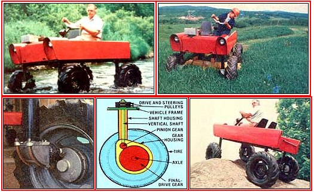
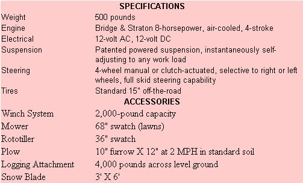

A totally new, unbelievably versatile, all-purpose work vehicle from Traction, Incorporated:
Until very recently, the world's established farm tractor manufacturers refused to accept the reemergence of the small "family farmer". Instead, such firms concentrated upon building more and more massive ( and less and less efficient in terms of work performed per dollar) machines. Even the newer-and admittedly much improved-practicalsized farm "workhorses" are destined, by design, to be forever incapable of dragging loads that are significantly greater than their own mass.
On the other hand, the nimble Quadractorhalf tractor, half june beetle on casters-[a] turns on a dime, [b] pulls eight times its own weight, [c] climbs a 42° slope, [d] maneuvers over rocks or through streams, and [e] logs, plows, discs, cultivates, and mows. With an 8 horsepower Briggs & Stratton engine, 72 to-1 gear reduction, and an internationally patented powered-suspension system, this strange machine has many of the capabilities of a conventional tractor of 20 to 25 horsepower . . . but it requires only a fraction as much fuel as do the larger machines and sells for less than half the price.
All four of the Quadractor's wheels are powered through vertical-shaft gear trains . . . using a technology originally developed by William B. Spence-founder of Traction, Inc. and designer of the Quadractor-for aircraft landing gear. It's this vertical-shaft innovation that lies at the heart of the vehicle's unique performance. In contrast to a massive conventional tractor, the Quadractor weighs only 500 pounds . . . yet it can pull nearly two tons! I test-drove one of Spence's little wonders on an inch of new snow-with one end of a 1,500-pound log slung from its belly-and there was no hint of slippage or loss of traction, even when pull ing up a 15° incline! It was truly an odd feeling: I was completely aware of the lightness and maneuverability of the vehicle, yet there it was . . . walking away with an extraordinary load!
The Quadractor is comprehensively engineered for complete traction, and this single-minded approach is responsible for the machine's "muscle". Three related-but separate and distinct-engineering features contribute to the unusual vehicle's incredible versatility:
[1] First and foremost in importance is the patented design of the four identical vertical drives to the wheels. The Quadractor operates continuously in fourwheel drive, with its left and right sides controlled by separate clutches. Each wheel's power is transmitted from a pulley to the vertical shaft, then down the shaft and through a set of bevel gears to a small pinion gear . . . which operates the large final-drive cog (see the illustration on the facing page).
As the pinion gears on all four shafts turn, they tend to walk up the outside of the large final-drive gears, and-as they climb-the cogs transfer the weight of the vehicle to the tires while simultaneously causing the wheels to revolve. Because the pinion gear housings are offset from their respective wheel hubs (and at the same time are allowed to "travel" within a 15° arc of the drive gears' circumference), the effect of this mechanism is to lift the chassis of the vehicle just at the moment the machine begins to move forward. It's a little like the sensation when the front end of a tractor lifts off the ground . . . but all four of the Quadractor's "feet" are firmly planted, and the weight of the machine- andits burden -is converted into that all-important traction.
[2] Another unique construction fea ture is the Quadractor's chassis, which is designed to flex over uneven terrain. This "twisting" keeps all four tires securely on the ground and "biting".
[3] Finally, both the position and the design of the hitch contribute to the vehicle's performance under load. The "Spence Hitch" distributes the weight of any implements, logs, etc. to all four wheels . . . instead of to the rear tires alone, as does a conventional three-point tractor hitch.
In short, the Quadractor was designed to be a versatile and effective machine. Its vertical-wheel-drive allows an amazing 31-inch ground clearance, and this dimension conveniently provides plenty of room for the Spence-designed belly hitch. The concept is so basic, it's a wonder it wasn't thought of years ago! Additionally, the "leggy stance" of the allpurpose vehicle permits it to traverse unbelievably rough terrain . . . and-because the drive mechanism chambers are sealed units-the Quadractor can ford streams with no ill effects. Better yet, more than half the vehicle's weight is concentrated at the lower portion of the leg assemblies, so the innovative implement is an extremely stable piece of equipment.
The Quadractor has had its most extensive field testing as a logging machine. During 1978, the Vermont Department of Forests, Parks, and Recreation-with help from the U.S. Forestry Service-compared the efficiency of the 8-horsepower Quadractor, a 16-horsepower diesel-fueled Kubota B7100, and a 48-horsepower Holder A55F diesel logging machine. As reported in an article entitled "Wood for Energy: Skidding Firewood With Small Tractors" (published by the Vermont Department of Forests, Parks, and Recreation, December 1978), this independently financed and supervised study found the Quadractor-$3,100, as equipped-able to "outlog" the $5,200 Kubota and just about hold its own against the $25,000 Holder!
The Quadractor's timber-toting capability is especially important, because now-for the first time-it may be practical for many small-woodlot owners to use their trees selectively without first constructing access roads . . . and without causing excessive damage to other trees or to the fragile forest floor. The study also points out that removal of deadwood and overcrowded growth will improve the quality of a hardwood stand .
The attachments for plowing, rototilling, and mowing fit easily and quickly into place on the underside of the Quadractor, and can be raised or lowered by a small electric winch. Because of its unorthodox design, the machine has no power takeoff. Instead, an auxiliary Briggs & Stratton engine mounts on the chassis to operate whatever implements are required.
Snow removal poses no great problem, either. Though the machine is too light to push a snowplow at much of an angle, it has enough traction to fill a "straight forward" plow blade . . . and the vehicle can then be easily maneuvered to deposit snow out of the roadway. Not long ago-no doubt spurred on by Vermont's arctic winters-Bill Spence somewhat whimsically designed a 155-horsepower snowblower for his brainchild, as well. The accessory weighed nearly a ton, cleared a full six-foot path with ease . . . and had the staff of the Green Mountain State's Highway Department scratching their heads and comparing costs. Needless to say, a smaller-and much more practical-homeowner's unit is now on the drawing board.
I visited Bill Spence's farm and walked among the litter of rejected gears and gadgetry in the old barn where the first prototype Quadractor was assembled 10 years ago. Of course, that initial design has been modified and improved several times with an eye toward mass production, but in 1974-after years of testing-the final drive (and the machine's other unique features) received their patents. Tool-up has occupied the last half decade and production is now underway in earnest at Traction Inc.'s factory in North Troy, Vermont.
The firm's manufacturing facility is as dynamic and independent as is Bill Spence himself. Almost every part in the Quadractor is made right on site: gears, shafts, pulleys, and steel framing. Andwith the corporation's own hydroelectric generating station scheduled for completion by August of this year-a steady rate of production will be assured at the plant . . . regardless of power outages or other public utility shortcomings.
Because there's a steel foundry right at the location, quality control is guaranteed entirely from the start, too . . . and this care is reflected in the firm's final product. On the day I was there, workers were casting chambers for the gear train and welding up clutch housings. I saw four partially assembled Quadractors on the line . . . but the company's ultimate goal is to reach a production rate of one unit every 20 minutes by mid-1980.
Increased production isn't Spence's sole concern, though. Research and development also carry a lot of weight at the Traction facility, and the people there are not only busily designing additional work implements for use with the machine, but are presently experimenting with alternate fuels-such as alcohol and methane-in order to make the Quadractor an even more versatile tool.
Interestingly enough, practically all Spence's employees have learned foundry and machine-shop work right on the job . . . with little prior experience. Most of these folks are young men from the surrounding area who've been caught up in the enthusiasm of innovative self-sufficiency that permeates all levels of this remarkable company.
It's not likely that Quadractors will replace a large proportion of the conventional tractors used by North America's many small farmers . . . at least not right away. Few of us have much under-
standing of the difficulties involved in building a national manufacturing business . . . and being successful at it. Traction, Incorporated's problems are compounded by the fact that demand for their innovative product is already outpacing production.
Dealerships are springing up throughout New England, though, and no doubt the firm will eventually distribute nationwide . . . and possibly to several locations overseas. Meanwhile, one thing is sure: Customer interest is running high, and folks who have seen the machine "do its stuff" are undeniably impressed. But for a year or so-until full production gets underway and service facilities are set up-those of us who live far from Vermont's mountains are just going to have to bite our lower lips and be patient.
Do, nevertheless, keep a weather eye turned to the north. New Englanders are well-known for their resourcefulness, and it shouldn't be too long before you'll get a chance to take a test drive . . . a ride which should convince you that the Quadractor is just about the most unusual-and potentially useful-work vehicle you've ever operated!
Just one final note: Characteristically-or perhaps symbolically-the brakeshoes of this technological wonder are cut from nothing less than Vermont hard maple. So, as this remarkable new tractor becomes better known worldwide, there will always be a little chunk of Vermont prudence and craftsmanship present . . . to exert-in the Yankee way-the proper measure of control.
|
 PHOTOS SUPPLIED BY TRACTION, INCORPORATED |
 |
|